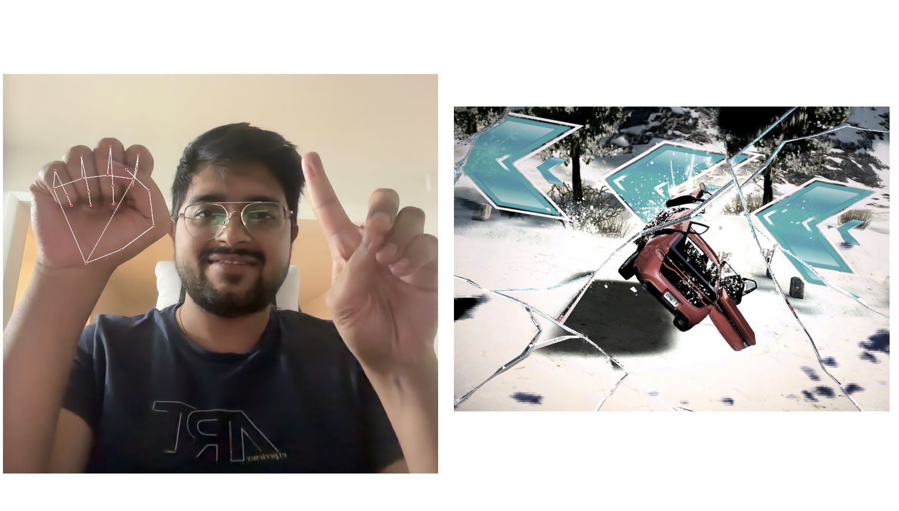

We aimed to develop a project that showcases the integration of Computer Vision in human-computer interaction to play games where users control gameplay through hand gestures. We sought the Asphalt8 racing game with four controls - turn left, turn right, brake, and nitro boost, to ensure accurate gesture recognition and minimize errors. This choice was ideal as it allows users to play using their index finger and palm while demonstrating the effectiveness of Computer Vision in creating accessible, real-time interactive applications.
Figure 1: Demonstrating vehicle controls in Asphalt 8 using hand gestures for gameplay.
With the continuous advancements in technology, the demand for more immersive and intuitive human-computer interaction methods has significantly increased. Traditional input devices such as keyboards, mice, and controllers have dominated gaming platforms for decades. However, with the advancement of computer vision and object detection libraries such as Mediapipe, we can present a novel way to bridge the gap between physical gestures and digital interactions, providing a more engaging and natural user experience. As shown in Figure 1, we use hand-based gesture controls to manage game functionalities in this project, leveraging techniques in real-time computer vision and machine learning.
The motivation behind this project stems from the desire to leverage computer vision applications in day-to-day tasks such as gaming experiences that are more interactive and accessible to a broader audience. Traditional controllers can be limiting for individuals with physical constraints, and the repetitive usage of such devices can lead to fatigue or strain. By introducing gesture-based controls, players can interact with the game environment more intuitively and dynamically, enhancing the overall user experience. Furthermore, the rise of augmented reality (AR) and virtual reality (VR) applications has highlighted the need for non-contact interaction methods. Gesture-based controls offer the potential to replace or complement existing input devices in such environments, enabling a seamless transition from traditional setups to futuristic gaming experiences. For our project, we read the video stream using the cv2 library, fed the data to the media pipe library to map hand landmarks, and then controlled the game inputs using these handmarks.
The implementation of gesture-based controls has applications beyond gaming, including:
Gesture-based interaction has traditionally relied on specialized hardware such as motion sensors, depth cameras, or wearable devices. Some of the notable methods include:
While effective, these approaches often come with drawbacks such as high cost, limited portability, and complex setup.
This project introduces a camera-only gesture recognition system that utilizes the MediaPipe framework for accurate and efficient hand landmark detection. Unlike traditional approaches, it eliminates the need for additional hardware, relying solely on a standard webcam and advanced machine learning algorithms.
Our solution is:
By using hand gestures as the primary mode of interaction, this approach redefines how players engage with digital environments, setting the stage for the next generation of intuitive and immersive games.
The project aims to create a gesture-based game control system using hand landmarks. For this, we captured live video from a webcam using the cv2 library, detected hand landmarks in real-time using Google’s MediaPipe Hand Landmarker, and translated these gestures into game control commands (e.g., steering and accelerating) using pynput.
Figure 2: Overall Approach of project.
Figure 3: Keypoint localization of hand landmark model.
Figure 4a: Left Steering using hand movement.
Figure 4b: Right Steering using hand movement.
Figure 5a: Nitro Boost using open plam.
Figure 5b: Braking using closed palm.
def controller(self, hand_landmarks, mp_hands, frame):
for idx, hand_landmark in enumerate(hand_landmarks.multi_hand_landmarks):
if hand_landmarks.multi_handedness:
hand_label = hand_landmarks.multi_handedness[idx].classification[0].label
if hand_label == "Right":
index_tip = hand_landmark.landmark[mp_hands.HandLandmark.INDEX_FINGER_TIP]
index_base = hand_landmark.landmark[mp_hands.HandLandmark.INDEX_FINGER_MCP]
x, y = int(index_tip.x * frame.shape[1]), int(index_tip.y * frame.shape[0])
prev_x, prev_y = int(index_base.x * frame.shape[1]), int(index_base.y * frame.shape[0])
self.steer(x,y, prev_x, prev_y)
else:
index_tip = hand_landmark.landmark[mp_hands.HandLandmark.INDEX_FINGER_TIP]
index_base = hand_landmark.landmark[mp_hands.HandLandmark.INDEX_FINGER_MCP]
x, y = int(index_tip.x * frame.shape[1]), int(index_tip.y * frame.shape[0])
prev_x, prev_y = int(index_base.x * frame.shape[1]), int(index_base.y * frame.shape[0])
self.accelarator(prev_y,y)
else:
index_tip = hand_landmark.landmark[mp_hands.HandLandmark.INDEX_FINGER_TIP]
index_base = hand_landmark.landmark[mp_hands.HandLandmark.INDEX_FINGER_MCP]
x, y = int(index_tip.x * frame.shape[1]), int(index_tip.y * frame.shape[0])
prev_x, prev_y = int(index_base.x * frame.shape[1]), int(index_base.y * frame.shape[0])
self.steer(x,y, prev_x, prev_y)
Code: Determine steering and acceleration based on right hand's index finger and left-hand palm.
While working on the project, we realized that the project's success relies on the accuracy of our hand detection and the latency of the system we are using. Below are the experiments and observations that we made to make this project work:
We used different thresholds to balance the false positive finger movements for horizontal shift and the actually intended movements. Below are the results of gesture counts with horizontal shifts for 10px, 15px, and 25px.
Figure 6a: Graph showcasing gesture counts vs latency for horizontal thresholds.
We used the INDEX_FINGER_TIP and INDEX_FINGER_MCP values to determine whether the palm is open for nitro boost or closed for brake, as this gives the largest and most consistent separation. We also tried other combinations to determine whether palm is open or closed, such as MIDDLE_FINGER_TIP and MIDDLE_FINGER_MCP and RING_FINGER_TIP and RING_FINGER_MCP, but INDEX_FINGER_TIP and INDEX_FINGER_MCP gave better gesture counts.
Figure 6b: Comparing Different Finger Landmarks for Open/Closed Palm Detection.
This parameter sets the minimum confidence threshold for detecting a hand in a frame and filters out false positives. At min_detection_confidence = 0.6, the system achieves a 98% detection rate in good lighting and maintains robustness in challenging conditions like low light and cluttered backgrounds.
This parameter sets the minimum confidence threshold for tracking hand landmarks between frames and ensures stable and accurate tracking of hand landmarks once a hand has been detected while controlling whether the system continues tracking the hand or requires a re-detection. At min_tracking_confidence = 0.6, the landmarks are consistent across frames, avoiding jittery or unstable tracking.
| Metric | Good Lighting | Low Lighting | Cluttered Background |
|---|---|---|---|
| Detection Rate (%) | 85 | 60 | 50 |
| False Positives (%) | 15 | 30 | 40 |
| Stability | Poor | Poor | Very Poor |
Table 7a: Parameter Configuration: min_detection_confidence = 0.2, min_tracking_confidence = 0.2
| Metric | Good Lighting | Low Lighting | Cluttered Background |
|---|---|---|---|
| Detection Rate (%) | 95 | 75 | 65 |
| False Positives (%) | 8 | 15 | 20 |
| Stability | Moderate | Moderate | Moderate |
Table 7b: Parameter Configuration: min_detection_confidence = 0.5, min_tracking_confidence = 0.5
| Metric | Good Lighting | Low Lighting | Cluttered Background |
|---|---|---|---|
| Detection Rate (%) | 98 | 85 | 80 |
| False Positives (%) | 5 | 8 | 10 |
| Stability | High | High | High |
Table 7c: Parameter Configuration: min_detection_confidence = 0.6, min_tracking_confidence = 0.6
This example showcases a successful scenario. In the picture, a user can be seen with the right-hand finger tilted to the left and the left-hand palm opening, and correspondingly, the car took a left turn while the nitro boost was activated.
Figure 7: Video frame showing a user's hand performing a gesture and corresponding car movement.
These are the two failures encountered before we calibrated the configuration parameter. In the first example, the camera could not detect the hand landmarks because of the cluttered background. In the second example, the system did not perform as expected, so the car crashed in the game.
Figure 8a: Video frame showing a user's hand performing a gesture but they are not mapped to hand landmarks.
Figure 8b: Video frame showing a user's hand performing a gesture but system couldn't respond in time..
This report describes developing a gesture recognition system to control gameplay in a racing game using real-time hand landmark detection using the MediaPipe library. The project demonstrated the potential of computer vision to enhance human-computer interaction by replacing traditional input devices with intuitive hand gestures. We can further enhance the robustness and versatility of our approach by: